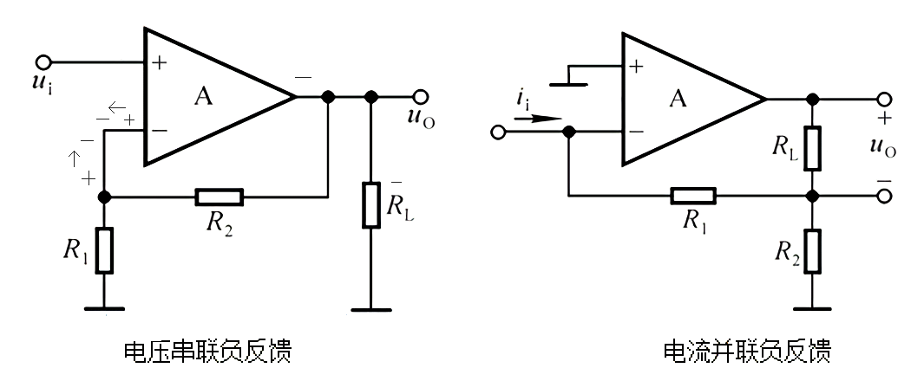

What's the feedback type

1. 电压 or 电流
电压反馈是把输出电压再送到前面(输入)， 本质特征是：把输出短路接地，会影响反馈(反馈支路可能会因此变成地线，无电压)
如果无影响，则是电流反馈
2. 并联 or 串联
反馈支路与输入端b有节点，并联
反馈支路与输入端b无节点，串联
3. 负反馈 or 正反馈
研究反馈不能离开反馈支路，你得先找到反馈支路，拿上面的电压串联负反馈图举例，反馈支路是所在线
设反馈支路所在集成放大器的端口输入一个正信号(+号)，A右边得到负信号(-)，最后回到反馈输入端
由图你可以看到两个箭头，你可以明显感觉到它们相互抵消，所以是负反馈
注意：
集成运算放大器的正负号是有意义的，
负(-)代表输入会变号(反向)，正(+)代表输入不变号(保持原极性)而对于普通三极管，
eb结正偏(带箭头)不变号，cb结反偏变号